Od zera do rewolwera
O broni palnej i strzelectwie – po ludzku i bez zadęcia
Pozwolenie na broń krok po kroku
Rewolwer Ruger Super Redhawk (Alaskan)
26 lutego 2021
tekst i zdjęcia: Mikołaj Bartnicki
redakcja: Beata Wojciechowska-Dudek
Potężne amerykańskie rewolwery Ruger Super Redhawk .44 Magnum – wariant z 7,5-calową lufą oraz Alaskan z lufą 2,5-calową
Jeśli jakaś broń palna zasługuje na miano ręcznej armaty, to z pewnością jest to flagowy rewolwer Rugera – model Super Redhawk. Nawet w swoim skrajnie skróconym wariancie Alaskan rewolwer ten budzi respekt samym wyglądem i dostarcza pierwszorzędnych wrażeń podczas strzelania.
- Wstęp
- W telegraficznym skrócie
- Historia
- Szkielet
- Lufa
- Bęben
- Amunicja
- Rękojeść
- Przyrządy celownicze
- Spust
- Zabezpieczenia
- Odrzut
- Ruger Super Redhawk Alaskan
- Jakość wykonania
- Akcesoria i części
- Dla kogo jest ta broń?
- Dalsza lektura
Wstęp
Pierwszą bronią palną, jaką sobie w życiu kupiłem, był rewolwer Ruger GP100 z sześciocalową lufą na naboje .357 Magnum. Wkrótce dołączył do niego model czterocalowy na tę samą amunicję. Z różnych powodów, wówczas starannie nie przemyślanych, po jakimś czasie sprzedałem je oba, czego żałuję do dziś. Błąd ten postanowiłem naprawić z nawiązką. Zamiast GP100 wybrałem rugera o bardzo podobnej konstrukcji, ale o większym kalibrze – model Super Redhawk, czyli GP100 na sterydach.
W telegraficznym skrócie
Ruger Super Redhawk to wykonany ze stali nierdzewnej duży i ciężki rewolwer wielkokalibrowy z odchylanym bębnem. Made in USA. Można z niego strzelać zarówno z ręcznie napiętego kurka, jak i z samonapinaniem (single/double action). Występuje w wersjach z lufami o różnej długości, strzela zaś wyłącznie potężną amunicją: .44 Magnum, .454 Casull, .480 Ruger oraz 10 mm Auto. Ten ostatni wariant nie jest dostępny w polskiej dystrybucji.
Podoba mi się
- Solidna konstrukcja
- Wygodna rękojeść
- Bardzo dobry spust
- Regulowane przyrządy celownicze
- Możliwość zamontowania lunety
Nie podoba mi się
- Straszliwa cena
- Niestaranne wykończenie
Co przemilczy sprzedawca?
- Wydasz sporo pieniędzy na amunicję
- Niełatwo będzie kupić odpowiednią kaburę
Czy kupiłbym go ponownie?
- Tak
Historia
Super Redhawk pojawił się na rynku w 1987 roku jako następca modelu Redhawk, produkowanego od przełomu lat .70 i .80. Z tym następstwem nie do końca wyszło, bo Ruger nadal produkuje oba modele. Skoro poprzedni wciąż się sprzedaje, to czemu nie? Z punktu widzenia konsumenta to tylko lepiej, bo ma wybór pomiędzy nowszą a starszą konstrukcją. No chyba że mieszka w kraju Trzeciego Świata między Niemcami a Rosją, to wówczas nie ma żadnego wyboru, bo oryginalne redhawki nie pojawiają się na sklepowych półkach z nową bronią. Pretensje należy kierować do krajowego dystrybutora.
Ale Redhawk nie jest jedynym przodkiem naszego bohatera, ma on jeszcze jednego rodzica. Część rozwiązań konstrukcyjnych wzięto bowiem z powstałego dwa lata wcześniej modelu GP100: mechanizm spustowo-kurkowy, a także kształt szkieletu i związany z tym sposób mocowania rękojeści. Zatem technicznie Super Redhawk ma więcej wspólnego z modelem GP100 niż z oryginalnym Redhawkiem, po którym odziedziczył jedynie kaliber i podobną nazwę. Przyjrzyjmy się bliżej tej konstrukcji.
Szkielet
Nie lubię ustawowego określenia szkielet broni
. W przypadku rewolwerów angielski termin frame
(rama) znacznie lepiej oddaje to, czym owa część w istocie jest.
Szkielet przypomina raczej część lokomotywy, czołgu lub silnika okrętowego niż rewolweru. Wykonany jest techniką odlewania, przez co jest gruby i masywny. Stało się to przyczynkiem do plotki o rzekomo większej trwałości rugerów w porównaniu z innymi rewolwerami – smith & wessonami w szczególności. Być może jest w niej odrobina prawdy, ale nie znalazłem żadnych rzetelnych i wiarygodnych testów porównawczych. W rzeczywistości stal odlewana jest co do reguły słabsza niż stal kuta, więc odlew musi być grubszy, jeśli ma uzyskać tę samą wytrzymałość co odkuwka – oto cała historia rzekomo niezniszczalnych rugerów.
Wbrew powszechnej opinii rewolwer odlewany nie jest gorszy niż rewolwer kuty. Jest po prostu wytworzony inną techniką.
Co ciekawe, Super Redhawka produkuje się wyłącznie z półmatowej stali nierdzewnej. Nie ma wariantów oksydowanych na czarno ani w żadnym innym wykończeniu. O ile srebrny pistolet może trochę zalatywać środkowoamerykańskim kartelem narkotykowym (lub po prostu wiochą), to w przypadku rewolwerów jest odwrotnie: srebrne na ogół wyglądają lepiej niż czarne.
W przeciwieństwie do znacznej większości rewolwerów szkielet Super Redhawka jest monolitem. Dostęp do mechanizmu wewnątrz uzyskuje się przez demontaż kabłąka spustowego. Nie ma spotykanej w innych rewolwerach zdejmowanej pokrywki, mocowanej po prawej stronie za pomocą śrubek. Dodatkowo przednia część szkieletu jest wydłużona o jakieś pięć centymetrów i obejmuje zamocowaną w tym miejscu lufę. Nie widziałem podobnego rozwiązania w żadnym ze znanych mi rewolwerów.
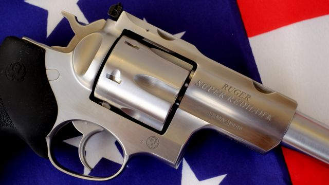Charakterystyczne wydłużenie miejsca mocowania lufy oraz brak typowej dla wielu innych rewolwerów bocznej pokrywki
Za tą oryginalną konstrukcją kryje się konkretna historia. Otóż kilka lat po wprowadzeniu na rynek rewolwerów Ruger Redhawk niektórzy ich użytkownicy zaczęli skarżyć się na… odpadające lufy! Lufa rewolweru zwykle przymocowana jest do szkieletu za pomocą ciasno spasowanego gwintu – jest wkręcona w szkielet niczym śruba w nakrętkę – i taką właśnie konstrukcję miał Redhawk. No i okazało się, że ten gwint nie trzymał zbyt pewnie, bo lufa lubiła zerwać jego zwoje i wraz z wystrzelonym pociskiem polecieć w świat.
Ponieważ nic tak nie cieszy jak konieczność szukania lufy w trawie, Ruger potraktował sprawę poważnie i wziął tę usterkę pod uwagę, projektując kolejny model: Super Redhawk. Zastosowano w nim właśnie przedłużenie szkieletu, aby zwiększyć powierzchnię gwintu trzymającego lufę. Później okazało się wprawdzie, że przyczyną odpadania redhawkowych luf był nie tyle zbyt krótki gwint, ile smar powodujący jego korozję (sic!), ale wówczas nikt o tym jeszcze nie wiedział. Słowo jednak się rzekło. Choć w redhawkach zastosowano już właściwy smar, co na dobre zlikwidowało problem rdzewiejących gwintów i odpadających luf, to przedłużony wokół lufy szkielet Super Redhawka pozostał stając się cechą rozpoznawczą tego modelu.
Lufa
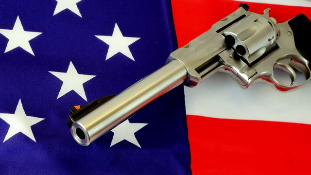Inżynierowe Rugera z pewnością lubią proste formy
Drugim wyróżnikiem Super Redhawka jest ordynarna lufa w formie prostej, grubościennej rury. Wygląda strasznie siermiężnie, niczym element zapożyczony z armatury sanitarnej, dodaje jednak temu rewolwerowi artyleryjskiego uroku. Trudno oprzeć się wrażeniu strzelania z miniaturowej armaty. Zwłaszcza że Super Redhawk jest rewolwerem zdecydowanie długolufowym. W standardowej dystrybucji występuje z lufami o długości 7,5 lub 9,5 cala. Jedynie wariant sprzedawany pod nazwą Alaskan ma bardzo krótką, 2,5-calową lufę.
Bęben
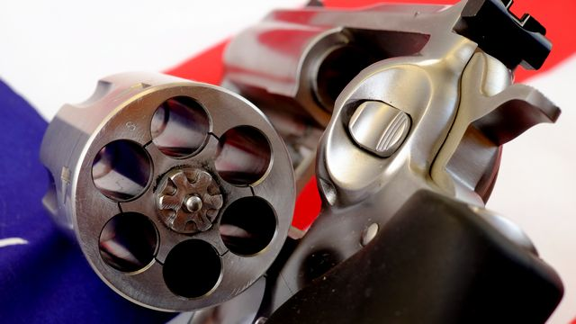Bęben Super Redhawka, widoczny gwiazdkowy rozładownik łusek
Bęben Super Redhawka mieści sześć nabojów, co w rewolwerowym świecie jest pojemnością kanoniczną. Ładowanie nabojów odbywa się po odchyleniu bębna w lewo – również typowo dla współczesnych rewolwerów. Sam bęben jest gruby i masywny, przynajmniej dla kogoś, kto dotychczas strzelał z rewolwerów mniejszych kalibrów. Wrażenie solidności burzy nieco pręt rozładownika, który ze względu na wzdłużny rowek wygląda na delikatny i łatwy do wygięcia lub – co gorsza – złamania na skutek przypadkowego uderzenia. Możliwe, że to tylko pozory, ale na wszelki wypadek radzę używać go z szacunkiem.
Bęben Super Redhawka ma tradycyjne kanele na powierzchni, pomiędzy komorami. Ich główną rolą jest redukcja masy, choć zapewne poprawiają też nieco chłodzenie poprzez zwiększenie powierzchni oddawania ciepła. Jedynie wariant na amunicję .454 Casull ma gładki bęben bez kaneli – i muszę przyznać, że wygląda on potężnie.
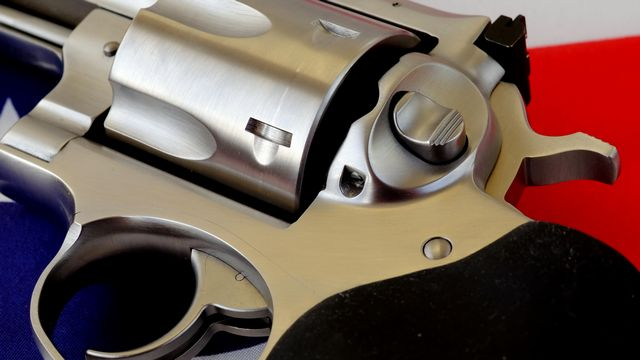Typowy dla rugerów przycisk otwierania bębna
Nietypowym detalem jest przycisk otwierania bębna. W przeciwieństwie do ogromnej większości rewolwerów nie jest od przesuwany w przód, a wciskany w głąb szkieletu. Podobne rozwiązanie w swoich rewolwerach stosuje też Kimber.
Inne nietypowe przyciski otwierania bębna mają rewolwery Colt: przesuwany w tył, a także Chiappa Rhino – w formie dźwigienki naciskanej w dół.
Po zamknięciu bęben rygluje się w trzech miejscach: centralnym sworzniem z tyłu osi, blokującym obrót ryglem dolnym oraz dodatkowym ryglem przednim, umieszczonym w ramieniu bębna. Ruger chwali się tym potrójnym ryglowaniem bębna, ale prawdę mówiąc, nie jest to jakieś wyjątkowe rozwiązanie. Większość współczesnych rewolwerów jest skonstruowana w podobny sposób.
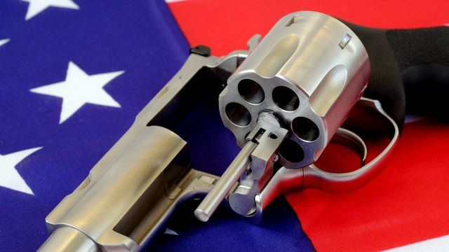Bęben Super Redhawka od frontu
Podobnie ma się rzecz z gniazdami dolnego rygla. Są one przesunięte na obwodzie bębna, tak aby nie współdzieliły swojej pozycji z komorami nabojowymi, dzięki czemu ich nie osłabiają. Przez to sam rygiel również nie jest umieszczony centralnie, lecz z boku, po prawej stronie szkieletu. Rozwiązanie z pewnością rozsądne, ale występuje nie tylko w rugerach.
Amunicja
W swojej podstawowej wersji super redhawki zasilane są nabojami .44 Remington Magnum. To potężna amunicja, z którą większość polskich strzelców raczej nie ma do czynienia. A to dopiero początek zabawy, gdyż .44 Magnum to najłagodniejszy wariant Super Redhawka. Dalej jest tylko lepiej, bo rewolwer ten występuje także w wersjach na amunicję .454 Casull oraz .480 Ruger. Model na naboje 10 mm Auto pomijam, bo jest niedostępny w Polsce. Który kaliber wybrać?
.44 Magnum to najtańsza i najsłabsza opcja. Ale w tym przypadku to nie oznacza, że naboje są tanie i słabe. Jeden nabój .44 Magnum kosztuje nieco ponad dwa złote. To znacznie więcej niż jakakolwiek popularna amunicja do broni krótkiej; przy .44 Magnum nawet naboje .357 Magnum jawią się jako tanie.
Nabój .44 Magnum można zastąpić słabszym nabojem .44 Special, który również pasuje do komór bębna. Jednak w polskich realiach jest to możliwość czysto teoretyczna, gdyż amunicja .44 Special w ogóle nie występuje w sklepach. Skazani jesteśmy zatem na strzelanie wyłącznie z .44 Magnum. I bardzo dobrze! Super Redhawk to rewolwer do polowania na wieloryby i nosorożce, zatem nawet nie wypada ładować go słabszą amunicją.
Następny wariant – .454 Casull – to nabój z czołówki najsilniejszej na świecie amunicji do broni krótkiej. Strzelanie tą amunicją jest nieprzyjemne. Nie tylko dla dłoni i nadgarstków, ale także dla portfela. Jeden nabój .454 Casull kosztuje bowiem ponad osiem złotych! Paczka amunicji za cztery stówy? Mnie nie stać. To jest opcja dla bogatych, a ja bogate mam co najwyżej wnętrze.
Ostatnią opcją jest wariant na amunicję .480 Ruger o energii podobnej do .454 Casull. Nie jest ona popularna na świecie, czemu trudno się dziwić, skoro tylko Ruger produkuje zasilane nią rewolwery. W Polsce stanowi więc egzotyczną ciekawostkę: ani rewolwerów na amunicję .480 Ruger, ani nabojów do nich nie znajdziemy polskich sklepach, bo i tak nikt by ich nie kupił.
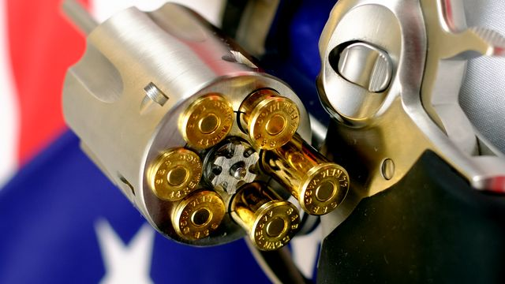Karmienie super redhawka paszą .44 Magnum
Wobec powyższego rozsądek i realia polskiego rynku nakazują wybrać wariant na naboje .44 Magnum. Nie tylko są najtańsze, ale i względnie łatwo dostępne – może nie ma ich w każdym sklepie, ale w większości. Nie musisz się martwić, że to najsłabszy wariant Super Redhawka. W realiach strzelectwa sportowo-rekreacyjnego .44 Magnum to potężna amunicja. Dużo czasu upłynie, zanim przyzwyczaisz się do odrzutu.
Zresztą nie tylko odrzut robi wrażenie. Sam nabój .44 Magnum jest ogromny – rozmiarem przypomina raczej torpedę z U-Boota niźli amunicję do broni krótkiej. Podczas ładowania bębna melodia z filmu Das Boot sama się nuci, zaś strzelając ciężko powstrzymać się przed wydawaniem w myślach komend: Nummer Eins… Los! Nummer Zwei… Los!
Rękojeść
Super Redhawk jest ciężki. Wersja 7,5-calowa waży ponad 1,5 kg. O ile nie jesteś Conanem Barbarzyńcą, Terminatorem 2 lub innym Robocopem, to strzelanie jedną ręką zdecydowanie nie wchodzi w grę. Przy takiej masie broni chwyt oburącz przestaje być opcją, a staje się koniecznością. I to mimo faktu, że spora masa broni redukuje odrzut przy strzale, co jest istotne przy amunicji Super Redhawka. Ale o odrzucie za chwilę. Zanim padnie strzał, skupmy się na samym trzymaniu broni.
Ruger Super Redhawk fabrycznie wyposażony jest w jednoczęściową półanatomiczną gumową rękojeść o szorstkiej powierzchni i wyraźnych wyżłobieniach na palce, bardzo podobną do tej z modelu GP100. Bardzo podobną, lecz nie taką samą. O ile z zewnątrz rękojeści te wyglądają identycznie, to różnica ukryta jest w środku. Rękojeść Super Redhawka ma wewnątrz poduszeczkę wykonaną z bardzo miękkiego tworzywa o strukturze ni to gąbki, ni to żelu. Dzięki tej wkładce rękojeść jest bardzo miękka w miejscu, gdzie opiera się część dłoni pomiędzy kciukiem a palcem wskazującym. Nieco łagodzi to efekty odrzutu. Rękojeść modelu GP100 pozbawiona jest tego detalu.
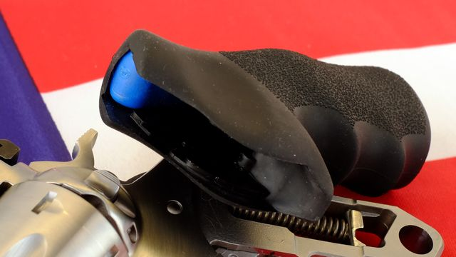Zdemontowana fabryczna rękojeść, widoczny wewnątrz niebieski element to miękka wkładka amortyzująca odrzut
Sam kształt rękojeści oceniam bardzo pozytywnie. Nie jest to prosta rękojeść, bowiem w widoku z tyłu jej wyprofilowanie przypomina nieco szklaną butelkę coca-coli, a zatem odpowiada wewnętrznemu ukształtowaniu dłoni. Z przodu zaś znajdują się bardzo głębokie wyżłobienia na palce. To dość dyskusyjna sprawa, bo sprawdzają się świetnie, o ile pasują do rozstawu i grubości palców użytkownika. Jeśli zaś nie pasują, chwyt robi się bardzo niewygodny i w zasadnie nie pozostaje nic innego jak wymiana rękojeści na inną.
Nieco gorzej oceniam sam materiał. Rękojeść jest z plastiku pokrytego grubą warstwą gumy o szorstkiej powierzchni. Materiał ten zapewnia świetną przyczepność chwytu, ale nie jest zbyt trwały. W miarę używania powierzchnia dość szybko staje się lekko lepka. Nie ma znaczenia, czy chronię ją przed środkami do czyszczenia broni, czy nie – zjawisko to zaobserwowałem we wszystkich rękojeściach tego typu, niezależnie od tego, jak je traktowałem. A było tych rękojeści już kilka, zatem to nie przypadek. Nie jest to wada, przez którą trzeba natychmiast zezłomować broń, ale irytuje.
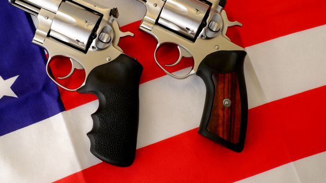Dwa rodzaje rękojeści: po lewej montowana współcześnie, po prawej tradycyjna rugerowska
Jakimś rozwiązaniem tych problemów może być wymiana na rękojeść starszego typu: o prostym kształcie i z drewnianymi wkładkami po bokach. Taka jest tradycyjna rękojeść rewolwerów Ruger, pojawiająca się jeszcze sporadycznie na niektórych egzemplarzach dostępnych w sprzedaży. Nie ma ona wyżłobień na palce, zaś drewniane wkładki nie lepią się tak jak guma. A jednak Ruger zrezygnował z niej na rzecz opisanego tutaj modelu. Zapewne w celu uproszczenia konstrukcji i montażu, a co za tym idzie – redukcji kosztów produkcji (ale nie redukcji ceny końcowej, co to, to nie!). W sumie szkoda – tę gumowo-drewnianą rękojeść uważam za nieco lepszą niż ta montowana obecnie.
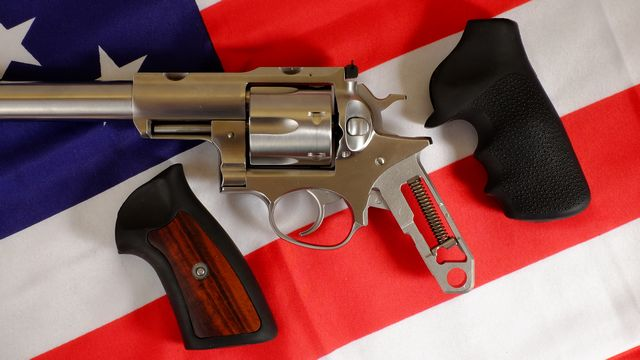Wymiana rękojeści jest trywialna
Przyrządy celownicze
Super Redhawk jest wyposażony w celownik mechaniczny złożony z muszki i szczerbinki. Ta ostatnia jest regulowana w pionie i w poziomie. Regulacja odbywa się za pomocą śrubek z gniazdami na płaski wkrętak. Obie śrubki obracają się z wyraźnymi kliknięciami. Jeden klik przesuwa punkt trafienia o 10–15 mm na dystansie 25 m, co wystarcza do strzelania na poziomie lokalnych zawodów klubowych.
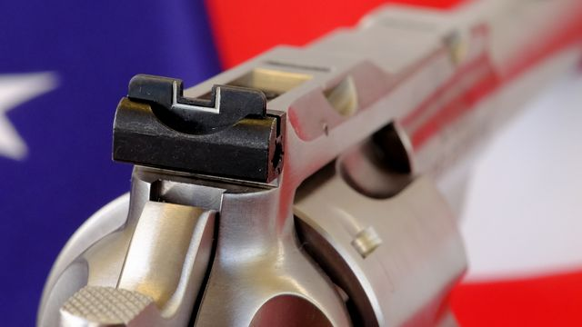Regulowana szczerbinka Super Redhawka
Szczerbinka ma namalowaną białą ramkę, podobnie jak w pistolecie Glock. Z kolei muszka ma wstawkę z jaskrawopomarańczowego plastiku, by poprawiać jej widoczność na tle ciemnego celu. W moim super redhawku akurat wstawka ta ma kolor bliższy zgniłej marchwi niż jaskrawej pomarańczy, ale to wyjątek, a nie reguła, taki egzemplarz mi się trafił. Niezależnie od odcienia, w warunkach oświetleniowych typowej strzelnicy kolorki te są zupełnie niewidoczne, więc nie mają żadnego znaczenia praktycznego.
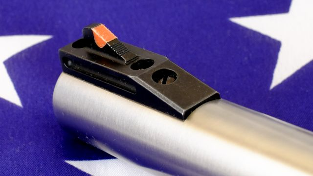Muszka z wstawką z pomarańczowego plastiku
Obraz przyrządów celowniczych podczas złożenia do strzału jest wyraźny, choć same przyrządy są niewielkie. Nie wiem dlaczego, przyrządy celownicze w rewolwerach zwykle są maleńkie; rugery nie są tu wyjątkiem. Na szczęście wycięcie w szczerbince jest wystarczająco szerokie, zostawia sporo światła wokół muszki, co ułatwia prawidłowe skupienie na niej wzroku. Jeśli mimo to nie możesz się przekonać do przyrządów celowniczych Super Redhawka, to dodatkową opcją jest…
Luneta celownicza
Może z naszej europejskiej perspektywy brzmi to jak Monty Python, ale Ruger Super Redhawk jest fabrycznie dostosowany do zamontowania lunety celowniczej! W krajach, w których pozostały jeszcze resztki wolności, dozwolone jest polowanie z wykorzystaniem rewolwerów. A wówczas luneta na rewolwerze ma więcej sensu, niż mogłoby się nam na pierwszy rzut oka wydawać.
W zestawie z rewolwerem dostajemy dwie stalowe obejmy dostosowane do tubusu lunety o średnicy jednego cala. Do broni mocuje się je za pomocą zaciskanych śrubami szczęk pasujących do odpowiednich gniazd w szkielecie. To jest rozwiązanie konstrukcyjne Rugera – obejmy lunety pasują tylko do Super Redhawka i do żadnego innego rewolweru. Jednak skoro przychodzą w zestawie z bronią, to ich niekompatybilność z całym światem nie stanowi problemu.
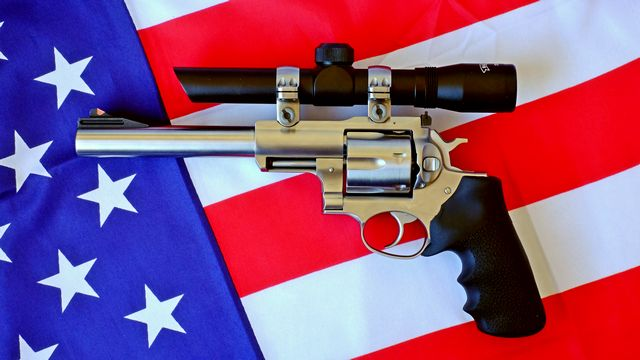Super Redhawk z zamontowaną lunetą celowniczą Walther 2×20
Problemem natomiast, i to nielichym, jest kupno odpowiedniej lunety. W grę wchodzi wyłącznie calowy tubus, ale to pół biedy. Gorzej, że nie może to być dowolna luneta o średnicy cala, lecz luneta pistoletowa. Do lunety na rewolwerze patrzy się z odległości około pół metra (dystans wyciągniętych rąk), więc luneta karabinowa się nie nadaje, bo jej okular jest dostosowany do obserwacji z odległości kilku centymetrów. A takich lunet pistoletowych – tutaj uwaga na niespodziewany zwrot akcji – nie ma w polskich sklepach. Nasz rynek akcesoriów do broni palnej śmiało może konkurować z analogicznym rynkiem w Burkina Faso.
W marnej ofercie polskich sklepów udało mi się znaleźć tylko jeden pasujący model lunety: Walther 2×20. Luneta ta powstała jako celownik do krótkich wiatrówek, a jej niska cena (około 250 złotych) sugeruje raczej rekreacyjne zastosowanie. Nie wiadomo, jak długo przetrwa ona na armacie .44 Magnum. Moja luneta jak dotąd działa, ale używam jej sporadycznie. Jednak nawet gdyby coś się z nią stało, to przy tej cenie stać mnie na nowy egzemplarz co roku, więc nie ma dramatu.
Celowanie bronią krótką przez lunetę stanowi ciekawe doświadczenie. Z początku jest dziwnie, ale gdy człowiek przywyknie, to dziesiątka na tarczy zaczyna przyciągać przestrzeliny. Istotnym minusem lunety jest jednak dodatkowa masa dołożona do i tak już ciężkiego rewolweru. Dotychczas nie miałem motywacji, aby ćwiczyć ramiona; teraz już ją mam.
Spust
Spust Super Redhawka może pracować w trybie pojedynczego lub podwójnego działania. Innymi słowy: można ręcznie napiąć kurek przed strzałem lub zaniechać tego – wówczas mechanizm napnie kurek automatycznie w czasie naciskania spustu. Prawie wszystkie współczesne rewolwery działają w taki właśnie sposób.
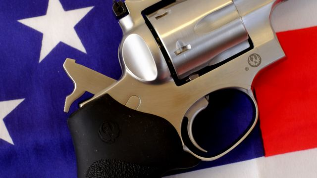Język spustowy cofnięty do tylnej pozycji przez napięty kurek
Przy strzelaniu z ręcznie napiętego kurka spust jest naprawdę rewelacyjny. Jego opór wynosi wówczas nieco ponad 2 kg, ale nic to! Najważniejszą zaletą jest jego rewolwerowa charakterystyka pracy. Mam tu na myśli brak ruchu jałowego przed strzałem. Z punktu widzenia (czy też raczej: czucia) strzelca, do momentu strzału język spustowy jest zupełnie nieruchomy. W miarę zwiększania nacisku palca spust ani drgnie i nagle – trach! – pada strzał i dopiero wtedy spust się porusza. Odbywa się to w takiej właśnie kolejności: twardy opór (tzw. ściana
), nacisk palca, strzał, ruch języka spustowego.
Taki sposób działania spustu jest charakterystyczny właśnie dla rewolwerowego trybu single action i nie spotyka się go często w pistoletach. Anglojęzyczni strzelcy mówią o takim spuście, że jest crispy (kruchy, chrupiący) i to słowo dobrze oddaje charakterystykę jego pracy. Spust Super Redhawka jest naprawdę świetnie wyczuwalny i pod tym względem ustępuje jedynie spustom rewolwerów Smith & Wesson (ale te z kolei stawiają nieco większy opór). Poza tym jednym wyjątkiem Super Redhawk zostawia daleko w tyle wszystko inne, z czego przyszło mi strzelać. Mówię tu oczywiście o broni bojowej; wiadomo, że sportowe dziurkacze do papieru to zupełnie inna liga.
Spośród wszystkich pistoletów najbardziej rewolwerowy
spust mają według mnie wszelkie warianty Colta 1911. Zaraz za nimi – Beretta 92FS.
W trybie samonapinania kurka spust działa zupełnie inaczej. Przede wszystkim początkowa pozycja języka spustowego jest zupełnie inna – znacznie bardziej z przodu, trzeba sporo sięgnąć palcem. Nie ma też mowy o nieruchomym języku spustowym, wrażeniu ściany
ani żadnej kruchości
. Po strzelaniu w trybie single action ma się wrażenie, że tryb double action wymaga iście kowalskiego uścisku dłoni. Opór jest ogromny; musi on wynosić ponad 5,4 kg, bo w mojej wadze zabrakło skali pomiaru, a taki właśnie jest jej zakres.
Na szczęście sama praca spustu jest gładka, bez zgrzytów, chrobotów ani żadnych wyczuwalnych nierówności. Nie zmienia to jednak faktu, że samonapinanie kurka przydatne jest chyba tylko przy stoliku pokerowym w saloonie.
Zabezpieczenia
Współczesne rewolwery nie mają manualnych bezpieczników; Super Redhawk nie jest wyjątkiem. Jego jedynym bezpiecznikiem mechanicznym jest tzw. szyna transferowa (ang. transfer bar). Jest to zabezpieczenie przed przypadkowym wystrzałem, działające całkowicie automatycznie, bez angażowania w żaden sposób użytkownika.
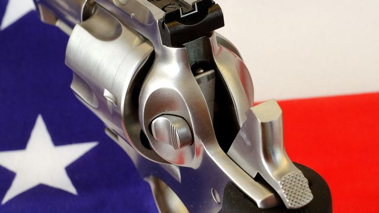Uniesiona szyna transferowa pomiędzy iglicą a kurkiem
Szyna transferowa to podłużny, płaski kawałek stali, który w momencie naciśnięcia spustu przemieszcza się w górę, wsuwając się pomiędzy kurek a zamontowaną w szkielecie iglicę. Jeśli kurek opadnie bez naciśnięcia spustu (na przykład na skutek awarii albo uderzenia po upuszczeniu broni na ziemię), nie dosięgnie on do iglicy, gdyż konstrukcyjnie zatrzymuje się tuż przed nią. Dopiero uniesiona naciśniętym spustem szyna transferowa wypełnia przestrzeń pomiędzy iglicą a kurkiem, przez co ten ostatni uderza w szynę, szyna zaś popycha iglicę, która zbija spłonkę naboju, dzięki czemu pada strzał.
Dodatkowo, jako zabezpieczenie zwykle uznaje się też długą drogę i duży opór spustu w trybie samonapinania kurka. Trochę to naciągane, ale faktem jest, że przy opuszczonym kurku przypadkowe naciśnięcie spustu jest w praktyce niemożliwe – wymaga to zbyt dużo siły aby zrobić to nieświadomie.
Odrzut
Tutaj dusza Izaaca Newtona zaciera ręce z nieskrywaną satysfakcją!
Powszechnie uważa się, iż amunicja .44 Magnum nie przyjęła się w amerykańskiej policji, bo niewielu funkcjonariuszy było w stanie opanować jej ogromny odrzut. Jestem skłonny w to uwierzyć. Na naciśnięcie spustu Super Redhawk odpowiada brutalnym kopnięciem w nadgarstek, podskakując przy tym, jakby chciał się wyrwać z dłoni strzelca. Nie ma w tym ani krzty przesady: trzeba go naprawdę porządnie trzymać, bo zbyt słaby chwyt wiąże się z koniecznością poprawiania ułożenia dłoni po każdym strzale. Pomaga w tym wspomniana już gumowa powierzchnia rękojeści, która dzięki swej przyczepności nie ślizga się nawet w spoconej dłoni.
Nie zmienia to jednak faktu, że odrzut Super Redhawka mógłby zatrzymać pociąg towarowy, więc wypracowanie i wyćwiczenie porządnego chwytu jest sprawą kluczową. Coś za coś; praw fizyki pan nie zmienisz; jeśli strzał ma powalić hipopotama, to odrzut musi być adekwatny. Wystrzelenie pełnej paczki amunicji .44 Magnum podczas jednej wizyty na strzelnicy jest pewnym wyzwaniem, ale warto je podjąć, bo satysfakcja jest nieziemska!
Ruger Super Redhawk Alaskan
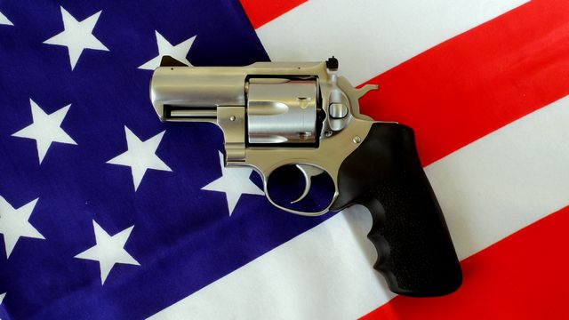Ruger Super Redhawk Alaskan .44 Magnum
Wariant Super Redhawka z 2,5-calową lufą sprzedawany jest pod nazwą Alaskan. Skrajnie krótka lufa Alaskana jest w całości ukryta wewnątrz przedłużonego szkieletu, kończy się równo z nim. Oprócz krótszej lufy istnieją jeszcze trzy cechy różniące go od standardowej wersji:
- brak możliwości zamontowania lunety;
- muszka o innej konstrukcji, zamontowana na szkielecie, a nie na lufie;
- inna, znacznie ładniejsza korona lufy.
Poza tymi detalami konstrukcja Alaskana nie różni się niczym więcej od pozostałych super redhawków. Dodatkową różnicą – użytkową – jest nieco większy odrzut przy strzale. Alaskan jest lżejszy o kawał lufy z przodu: waży prawie 300 g mniej, więc podskakuje nieco mocniej niż jego długi brat. Ta różnica nie jest jednak drastyczna, bo nawet z krótką lufą rewolwer ten wciąż jest ciężki.
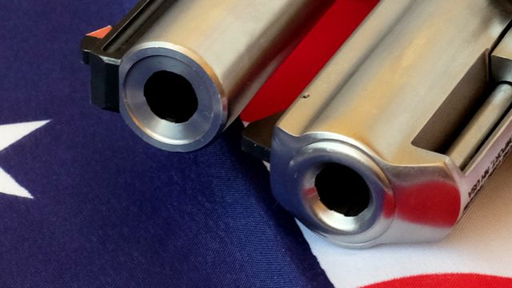Korony luf obu wariantów Super Redhawka, Alaskan po prawej stronie
Do czego służy taki krótki rewolwer o tak absurdalnym kalibrze? Ponoć do obrony przed niedźwiedziami. Jak wytłumaczył mi sprzedawca w sklepie myśliwskim, gdzie nabyłem mojego Alaskana: Jak już leżysz pod niedźwiedziem, to wciąż jesteś w stanie wyciągnąć taki krótki, poręczny rewolwer i strzelić w niedźwiedzia z przyłożenia
. Przyjmuję takie wyjaśnienie; w końcu to sprzedawca jest myśliwym, nie ja. Zresztą nawet jeśli atak szarżującego niedźwiedzia jest w Polsce mało prawdopodobny, to uroczy, krótki i masywny pysk Alaskana jest wystarczającym powodem aby go mieć.
Jakość wykonania
Tutaj niestety do tej beczki miodu muszę wrzucić łyżkę dziegciu. Jakość wykonania jest daleka od ideału. Wedle pewnej teorii spiskowej amerykańscy producenci broni, tacy jak Ruger lub Smith & Wesson, nie spisują na straty towaru drugiego gatunku, lecz wysyłają go do dystrybutorów w Polsce i w podobnie biednych krajach. Broń, która nie przeszła kontroli jakości i której nie zechciałby żaden Amerykanin, jest sprzedawana u nas, bo na naszym biednym rynku i tak ktoś ją kupi. Patrząc na moje Super Redhawki – jestem skłonny w to uwierzyć.
Skontaktowałem się z Rugerem w sprawie selektywnej dystrybucji gorszych egzemplarzy na rynki europejskie. Wszystkiemu zaprzeczyli. Nie spodziewam się, żeby jakikolwiek producent oficalnie przyznał się do takich praktyk.
Spasowanie elementów bywa co najmniej niestaranne, żeby nie powiedzieć: błędne. Mój Alaskan między zespołem spustu a właściwym szkieletem ma szparę widoczną gołym okiem. Naprawdę przeszedł on jakąkolwiek kontrolę jakości? Szczerze wątpię.
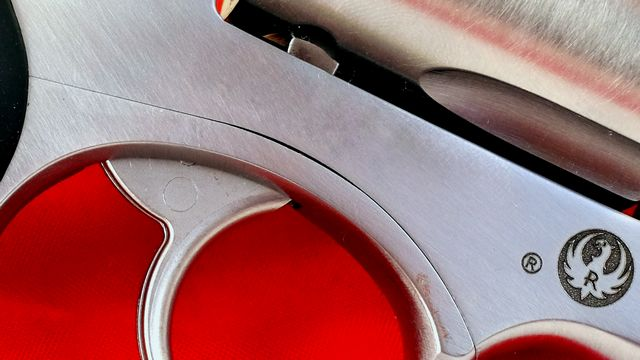Paskudna szpara pomiędzy elementami
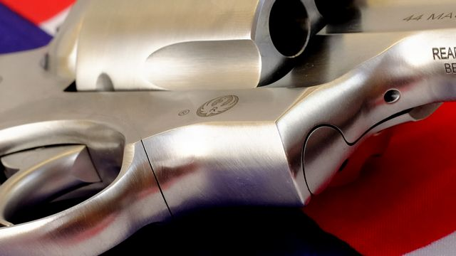Kolejny przykład niestarannego spasowania elementów
W egzemplarzu z długą lufą szkielet ma w miejscu mocowania montażu lunety ślad po uderzeniu jakąś twardą krawędzią, być może narzędziem. Raczej nie powstał on w transporcie lub sklepie. Rewolwer podróżował w fabrycznym pudełku, a w sklepie leżał sobie spokojnie na półce. Jestem niemal pewien, że ta kancera jest efektem niedbałego obchodzenia się z nim na linii produkcyjnej.
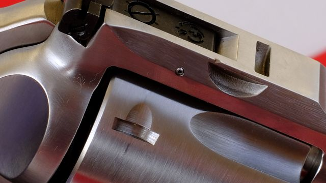Ślad od uderzenia jakąś twardą krawędzią, mój super redhawk miał go już w sklepie
Wróćmy jednak do Alaskana. Po otwarciu bębna ukazuje się prawdziwie przykra niespodzianka. Sufit okna, w którym siedzi bęben, jest wypolerowany tylko na części powierzchni, a i to byle jak. Reszta powierzchni nie jest w ogóle obrobiona; jest szorstka jak surowy odlew. Fajnie, komuś w fabryce się nie chciało, w końcu każdemu może zwisać, pracownikom Rugera również. Jakby to była broń marki Norinco (synonim taniej chińskiej tandety), nie powiedziałbym słowa skargi, bo tam niska jakość wykonania idzie w parze z równie niską ceną, ale w rewolwerze za ponad sześć tysięcy? Wy tam tak na serio w tym Rugerze czy to jakiś wyszukany żart, którego nie pojąłem?
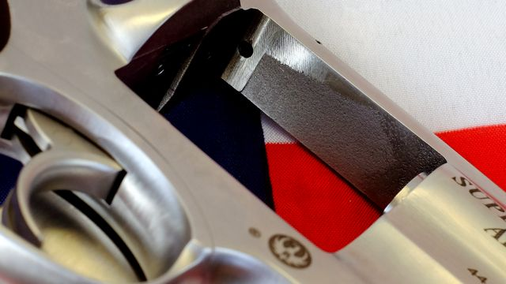Skandalicznie niechlujna polerka
Nie są to jakieś krytyczne błędy wykonania, raczej kosmetyka bez wpływu na działanie broni. Jednak w rewolwerze tak uznanej marki, jaką jest Ruger, nikt nie spodziewa się takich niedoróbek i przy tej cenie należy rozpatrywać je w kategorii skandalu. Za te pieniądze rewolwer ma być wykonany i wykończony idealnie, lecz niestety nie jest.
Akcesoria i części
Powiem od razu: bieda, lipa i dziadostwo pod każdym względem. Jest czego zazdrościć posiadaczom cezetek i glocków.
W Polskich sklepach nie znajdziesz żadnych części zamiennych do rewolwerów Ruger. Jeśli w twoim egzemplarzu pęknie sprężynka, zgubisz pin czy będziesz potrzebował coś naprawić – to kaplica.
Zdobycie wymiennej rękojeści jest równie trudne: polscy sprzedawcy robią wielkie oczy, jakbym pytał ich o sepulki, nie o głupi gumowy uchwyt z fabryki na Tajwanie. O speedloaderach także zapomnij. Pozostają zagraniczne sklepy, które polskich klientów traktują różnie, przeważnie bardzo kiepsko.
Kabur do Super Redhawka w polskich sklepach po prostu nie ma. Polskim rzemieślnikom wykonującym skórzane kabury raczej nie zależy na klientach. E-maile ignorują, o ustaleniach telefonicznych nie pamiętają, umów nie dotrzymują – wszyscy, z którymi miałem do czynienia, co do jednego, bez wyjątków! Przykro mi, ale takie jest moje doświadczenie z tymi dziadami i więcej nie chcę podnosić sobie ciśnienia.
Ostatecznie można dopasować jakąś uniwersalną szmacianą kaburę spośród wielu dostępnych w sklepach z militariami. Ale taka prowizorka to jest opcja minimum, nic ponad to.
Sklep internetowy Rugera ma części, akcesoria oraz kabury. Jest też skłonny wysłać je do Polski, ale przyjmuje płatności jedynie za pomocą amerykańskich kart kredytowych. Chłopaki zatrzymały się w latach .90 ubiegłego wieku, bo o PayPalu lub kryptowalutach nie słyszeli. Co zrobisz, Bożenko? Nic nie zrobisz.
Sensownym rozwiązaniem jest skorzystanie z usług pośrednika robiącego dla Polaków zakupy w Stanach Zjednoczonych; jest kilka takich firm. Pośrednik dokonuje w Ameryce wskazanych przez ciebie zakupów, a następnie dopełniając wszelkich obowiązujących formalności wysyła je do Polski pod twój adres. Szukając takiej usługi upewnij się, że dana firma zgadza się przesyłać części broni, bo choć w myśl naszej ustawy nie są to części istotne wymagające pozwolenia, to niektórzy pośrednicy na hasło broń palna
reagują paniką i odmawiają usługi.
Ja skorzystałem z usług pośrednika Zakupy w USA. Na zestaw rękojeści rewolwerowych ze sklepu Rugera czekałem miesiąc, zaś za całość usługi zapłaciłem o ⅓ więcej niż sklepowa cena zamówionych rzeczy. Polecam!
Podsumujmy zatem: broń droga, amunicja droga, części i kabur w praktyce brak…
Dla kogo jest ta broń?
Z pewnością nie dla każdego. Przede wszystkim Super Redhawk jest strasznie drogi. Zarówno w momencie zakupu, bo kosztuje grubo ponad sześć tysięcy złotych, jak i w eksploatacji, bo ponad dwa złote za jeden nabój to nie jest tanio. Pomijając najzamożniejszych strzelców, strzelanie z Super Redhawka jest zbyt kosztowne jak na broń do regularnego treningu, i to nawet gdy mówimy o najtańszym wariancie, czyli tym na amunicję .44 Magnum.
Być może Super Redhawk ma większy sens ekonomiczny na strzelnicach komercyjnych jako atrakcja dla gawiedzi. Wówczas nawet wariant na naboje .454 Casull w dłuższej perspektywie zarobi na siebie.
Przez tę wysoką cenę znacznie trudniej zaakceptować niedoskonałości wykończenia. Zdecydowanie nie powinny mieć one miejsca w broni z tej półki cenowej. Niedoróbka, która w taurusie za nieco ponad dwa tysiące złotych tylko trochę drażni, staje się nie do zaakceptowania w kosztującym trzykrotnie więcej rugerze.
Jeśli jednak przymknąć oko na aspekt finansowy, to jako broń do posiadania i do strzelania rekreacyjnego Super Redhawk sprawdza się bardzo dobrze, zwłaszcza jeśli jest się – tak jak ja – miłośnikiem rewolwerów. Co prawda rewolwer ten nie jest otoczony takim kultem jak Colt Python czy Smith & Wesson 29, ale niczego mu to nie ujmuje. Dostarcza adekwatnych do swojego kalibru wrażeń na strzelnicy. Zabawa przy rąbaniu z .44 Magnum jest naprawdę przednia.
No i wiadomo: do obrony przed niedźwiedziami – jeśli akurat masz taką potrzebę – nie znajdziesz w Polsce nic lepszego od Alaskana.
Wciąż jednak pozostaje aktualne pytanie: jeden super redhawk czy trzy alfy lub taurusy za te same pieniądze? Ja już wybrałem. Oba super redhawki widoczne na zdjęciach należą do mnie i mają w moim sejfie dożywotnią kadencję.